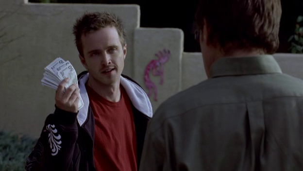
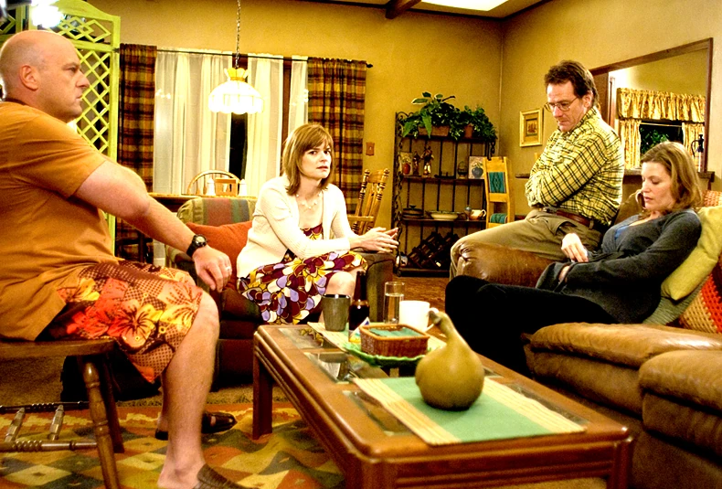

Pilihan Dan Ego
Jesse mencoba untuk memasak sabu sendiri namun gagal total, membuktikan bahwa ia tidak bisa lepas dari keahlian kimia Walt. Di sisi keluarga, Walt akhirnya mengakui kepada seluruh keluarga besar, termasuk Hank dan Marie, bahwa ia menderita kanker. Sebuah intervensi keluarga diadakan untuk membujuk Walt agar menerima tawaran bantuan keuangan untuk pengobatannya dari teman lamanya yang kaya raya, Elliott Schwartz. Namun, Walt dengan tegas menolaknya.
"Cancer Man" dengan ahli menyeimbangkan dua dunia Walt: dunia kriminal yang baru ia masuki dan drama keluarga yang rumit. Episode ini adalah eksplorasi mendalam tentang harga diri, kebanggaan, dan ego. Penolakan Walt terhadap bantuan dari Elliott bukanlah tentang uang, melainkan tentang kontrol. Untuk pertama kalinya dalam hidupnya, Walt merasa memiliki kekuatan dan kendali melalui persona Heisenberg, dan ia tidak rela melepaskannya demi menjadi "proyek amal" orang lain.
Sesi intervensi keluarga dengan "bantal berbicara" adalah adegan yang ditulis dengan sangat cerdas. Semua orang di ruangan itu mengungkapkan perasaan mereka, berpikir bahwa mereka tahu apa yang terbaik untuk Walt. Namun, monolog penutup Walt mengubah segalanya. Saat ia merebut bantal itu dan berkata, "Ini adalah pilihanku," itu adalah momen yang sangat kuat. Itu bukan lagi suara seorang guru kimia yang pasrah, melainkan suara seseorang yang telah menemukan kekuatan baru. Di sinilah kita melihat dengan jelas bahwa motivasi Walt bukan lagi murni untuk keluarga, tetapi juga untuk memuaskan egonya sendiri yang baru lahir.